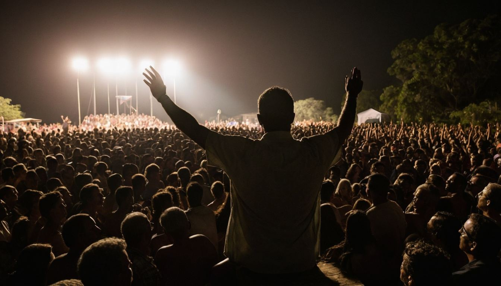
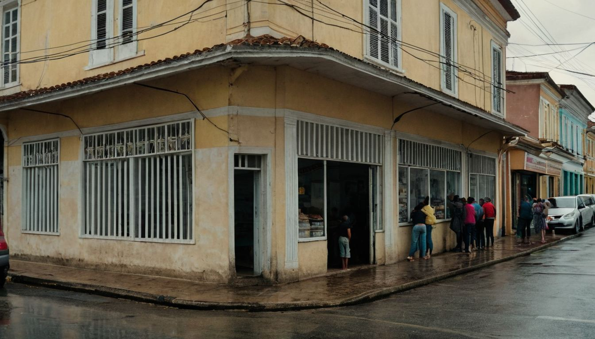
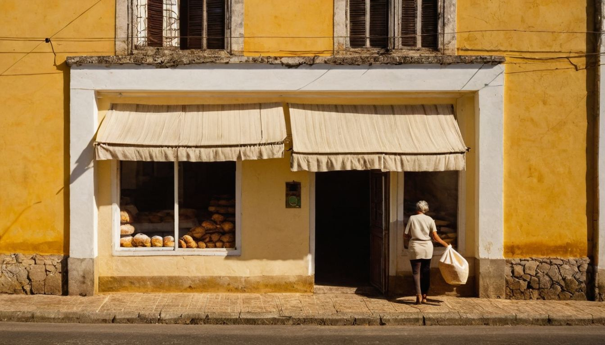

Governe uma cidade brasileira. Resista às promessas fáceis — ou caia nelas e pague a conta. Economia aprendida na pele, em dois mandatos.
Congelar preços, imprimir vales, estatizar a padaria — tudo dá aplauso na segunda-feira. O jogo mostra o que acontece nas semanas seguintes.

O Prometedor oferece tudo de graça — e a sua aprovação sobe a cada “sim”. Governar nunca pareceu tão fácil.

Prateleira vazia, fila na chuva, obra parada. Ninguém na cidade sabe explicar por quê. Todos olham para você.

Uma aula de verdade abre no momento da dor. Entender a engrenagem vira Lucidez — e Lucidez reconstrói cidades.